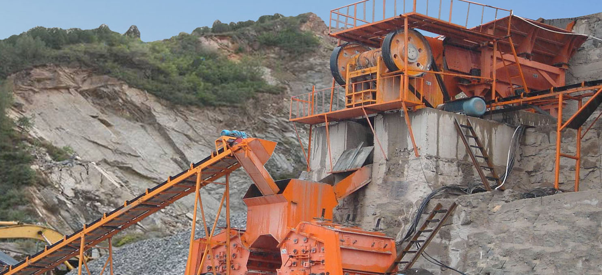

- Project Case
- Zenith Concrete Crushing Plant in Brunei
- Zenith Stone Crusher in Angola
- Manufacturing Sand From Rocks With B-VSI-7611 in UAE
- Zenith Screening Plant in Palestine
- Mexico 120-150tph Stone Production Line
- Peru 60-80 tph Stone Production Line
- Australia 150tph Stone Crushing and Screening Plant
- A Very Successful 200-250tph Crushing Plant in Kenya
- Kenya 30-40 TPH Stone Production Line
- Kenya 100 TPH Mobile Stone Production Line
- Crushing Plant in Ghana from Zenith 400-450tph
- Oman 200 TPH Stone Production Line
- Zenith Portable Limestone Crushing Line
- Zenith 300TPH Complete Crushing Line in Jummum, KSA
- Zenith XZM Ultrafine Mill in INDIA
- Limestone Grinding Plant in Belgium
- XZM221 Ultrafine Mill in Egypt
- Grinding Plant in Mexico
- Grinding Plant in Thailand
- Zenith 100-120tph Stationary Crushing Line in Addis Ababa
- Zenith 100-120 T/H Mobile Crushing Line in Nairobi
- Zenith 100-120tph Stationary Crushing Line in Kenya
- Tanzania 100-120 TPH Stone Production Line
- Zenith Cone Crusher Line In Indonesia
- Malaysia 300TPH Impact Crushing Plant
- Zenith 300 TPH Stone Production Line in Suhar-Liwa, Oman
- Zenith Stationary Basalt Crushing Line In Jeddah
- Aggregate Plant
- Mineral Plant
- Artificial Sand Making Plant
- Construction Waste Recycling Plant
Gold mineral beneficiation process
Lode gold ore beneficiation method, gold ore beneficiation technology
There are many types of lodegold ores that are developed in the world and there are five kinds of lodegold ores: the quartz lodes that contains gold or golden iron ore; altered granite that contains gold iron ore; the sulfide ore quartz lode that contains gold and poly-metal; the quartz lode that contains gold oxidation ores and gold tungsten arsenic. According to the characteristics of various ore types, there are many methods to use to do beneficiation, such as gravity separation, amalgamation process, flotation, cyanide process, thiourea method, carbon slurry process and resin loading, gold ore dressing etc. One method or a variety of comprehensive process to do beneficiation, sometimes with hydrometallurgy and heat treatment method.

Gold extraction by gravity separation
The gravity separation is one of the ancient and ordinary methods in gold extraction. In the gold sand ore, the gold exists in monomer natural gold form and the density is over 16t/m3, which is quite different from gangue density. So the gravity separation is the most important and the most effective and the most economic method in sand gold ores beneficiation. But in lode gold dressing plant, gravity separation is not used alone and is of used as one part of combination gold leaching process. In grinding and grading loop, jigger machine or spiral chute is used with shaking table. By this way, the dissociatve coarse monomer gold grains can be recycled in advance so that it is beneficial to the flotation work or cyanide process and the qualified gold concentrate can be got. The gravity separation is commonly used in small gold mine and local group ore mountains.
In gold extraction, the main equipments of gravity separation consist of all forms of chutes, jiggers and shaking tables. In addition to conventional gravity separation equipments, according to China's gold production characteristics, in digesting and absorbing foreign advanced equipment basis, our country developed many kinds of new gravity separation equipments, such as belt chute, ross chute, circular jigger, gold sand centrifugal washing unit.
This equipments get good results in gold production. soft face chute also is used to process flotation tailings or amalgamation tailings to improve gold recovery.
Gold extraction by amalgamation process
According to the production mode, the amalgamation process can be classified into inside amalgamation process and outer amalgamation process. In gold sand ore mountains, the amalgamation process is mainly used to separate the gold and heavy sand minerals out. In lode gold ores, amalgamation process is usually used as one part of combination flow and used with flotation, gravity separation and amalgamation process, so that the coarse gold monomers can be collected.
Inside amalgamation process is processed in mercury mixing tube or ore grinding machine so that mercury pollution can be controlled.
The common used equipment in outer amalgamation process is amalgamation plate. The amalgamation plate consists of stent, bed surface and mercury board. The mercury board materials are gold copper plate, silver copper plate and silver plate. The mercury mixing effect of silver copper plate is the best. In order to make silver coating and production changed easily, the electrolytic copper plate can be cut into small pieces whose width is 400-600mm and length is 800-1200mm. After silver coating, according to the stents sloping direction, the amalgamation plates are laid on the bed surface.
Gold extraction by flotation
Flotation process is one of the most widely used methods to process lode gold in gold beneficiation plant. In most instances, flotation process is used for processing sulfide minerals gold ores with high flotability and the effect is most notable. In recent years, the flotation process in gold ores has large evolution. The main performances are innovation process, new drug researching and design improving. Using stage grinding and stage beneficiation process is development trend of gold flotation extraction at present. Many foreign gold beneficiation plants use two stages even three stages and the gold recovery can be improved by 2%-6%. For the flotation process only can enrich the gold into all kinds of sulphur mineral concentrates as much as possible and the final gold products can not be got. Therefore, the beneficiation plants that use single flotation flow are not so much. The flotation process is only used as a process in combination flow.
Gold extraction by cyanide process
Since cyanide process had been used in mines for gold and silver extraction in 1887, the cyanide process is used for hundreds of years and its craft is quite mature. For the cyanide process features with high recovery, strong ore adaptability and can produce gold locally, the cyanide process is one of the main methods in gold production at present. Cyanide process can be classified into cyanide mixing process and cyanide diacolation process. The cyanide mixing process is used for processing tailings after gravity separation and amalgamation process, or processing gold concentrates in flotation, or for cyanide process in all slurry. Cyanide diacolation process is used for processing flotation tailings and heat leaching of low grade gold ores. The ordinary cyanide process is a kind of mature craft. It consists of leaching raw material preparation, cyanide mixing leaching, countercurrent washing solid-liquid separation, leaching solution purification and deoxidization, zinc powder replacement and acid pickling, smelting and ingot casting.
Gold extraction by cyanide carbon slurry process
Carbon slurry process is a new type craft in recovering gold and silver, whose foundation is conventional reformed cyanide leaching process and zinc powder replacement method. The cyanide carbon slurry process consists of raw material leaching preparation, agitation leaching and counter-current carbon adsorption, load gold carbon desorption, electric product electrolysis or deoxidizing zinc powder replacement, smelting and ingot casting and activated carbon regeneration activation.
Gold extraction by heap leaching
Heap leaching is transporting the mined ores to the prepared storage yard for pile building, or placing the mined ores on stockpiling waste stones or low grade ores directly, then using the cyanide leaching solution for spraying or diacolation. The solutions come through the ore stones to produce filtration leaching role. The cyanide leaching solution can be used for many times, the ore piles are sprayed repeatedly, then the leaching solution is collected and then active carbon absorption method or metal zinc replacement method is used. In abroad, the gold ores grade in 1-3g/t by heap leaching. The gold recovery is 50%-80% and the silver recovery is 30%-50%.
Related equipment used in this plant:


Request a quotation
CONTACT US
0086-21-58386256
86-21-58383028
info@crusherproduct.net
SERVICE ONLINE >